Schedulink
A task-scheduling system for the Anaplan planning platform, designed for clarity at scale.
ROLE
UX Designer & Team Lead (team of 5)
TIMELINE
MSc Semester Project· 4 months · 2025
TOOLS
Figma · Atomic Design · SUS
Demo
Anaplan is an enterprise business-planning platform used across finance, supply chain, and retail. Its legacy scheduling experience was fragmented, making it difficult to manage periodic, systematic data processing across disparate systems and time zones. Collaborating with Anaplan on this project, our team used a user-centred process to develop a comprehensive task-scheduling concept and a high-fidelity prototype—a modular, accessible task scheduler grounded in an atomic design system.
My Core Contributions:
Formulated the macro business logic and high-level system flows.
Contributed to contextual user research and pain-point definition.
Collaborated with the team to translate complex operational workflows into interactive Figma wireframes, with a focus on structural logic.
OVERVIEW
82.1
System Usability Scale score (range 77.5–90.0) - above the 80-point threshold for "excellent" usability.
Anaplan's scheduling functions were scattered across the platform, leaving users without a centralised way to manage, monitor, or troubleshoot data flows.
THE CHALLENGE
No centralised interface
Scheduling tools were fragmented across the platform, forcing users to manage imports, exports, and syncs manually.
Poor visibility
Teams lack a clear overview of which data flows are running, failed, or delayed, causing confusion.
High business risk
Missed or failed runs directly impacted forecasting, reporting, and cross-departmental decision-making.
This affected both Admins managing system-wide schedules and Builders responsible for individual tasks across departments such as Finance, Sales, HR, and Supply Chain.
PROCESS
01 Research Approach
Primary Research: Interviews with Anaplan workers
Secondary Research: Competitive review (Airtable, Monday.com)
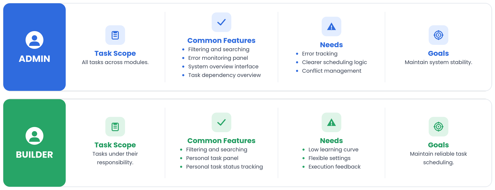
02 User Persona
03 Project Objective
Build a flexible scheduler.
Simplify the Create, Read, Update, Delete, Test, Trigger workflow.
Enable cross-team planning.
Support multiple industries.
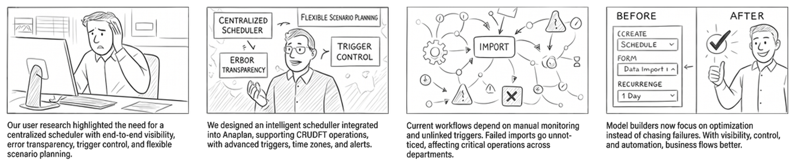
Storyboard
DESIGN PROCESS
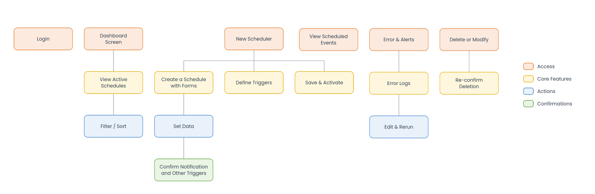
User Flow
Wireframe
Core Interface
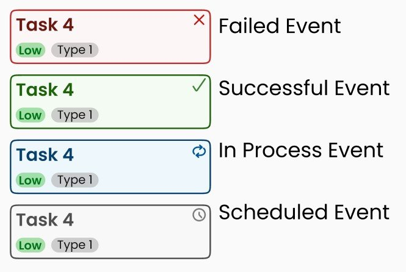
Visualising different statuses with colours and icons
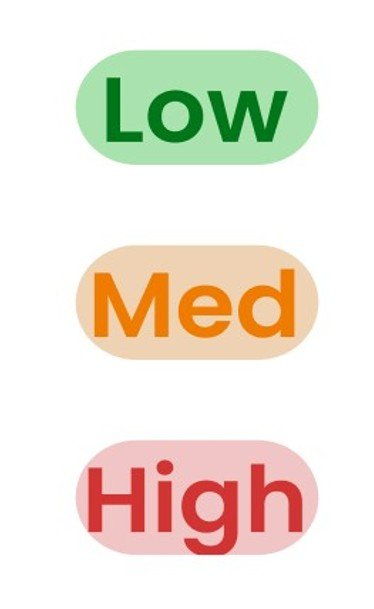
Priorities of each event
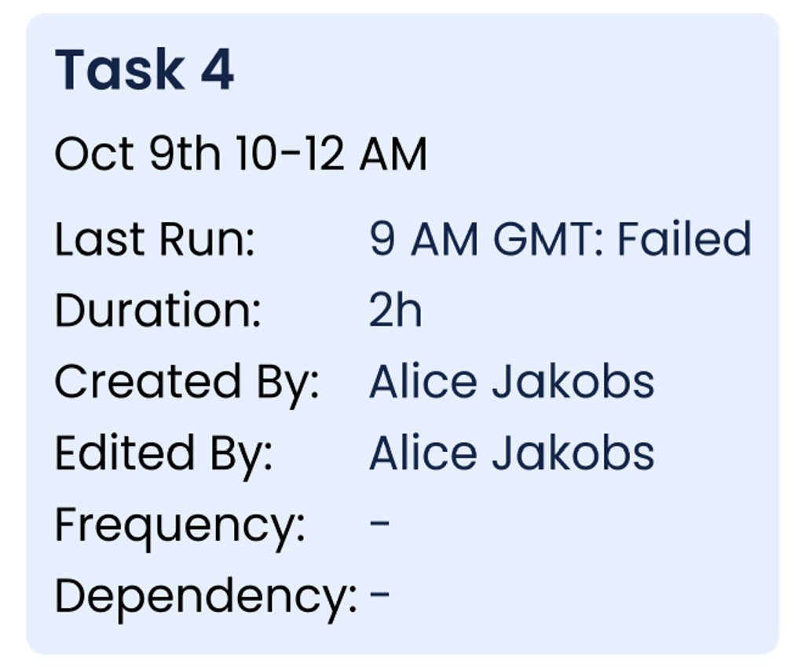
Properties of each event
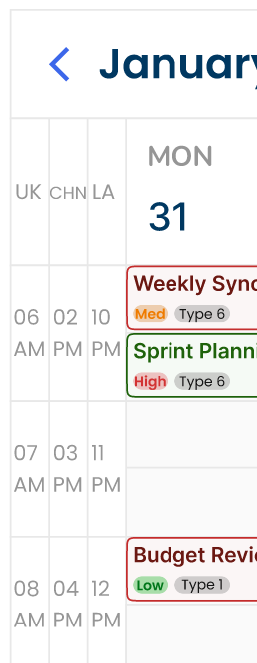
The calendar view displayed multiple time zones side by side for international companies.
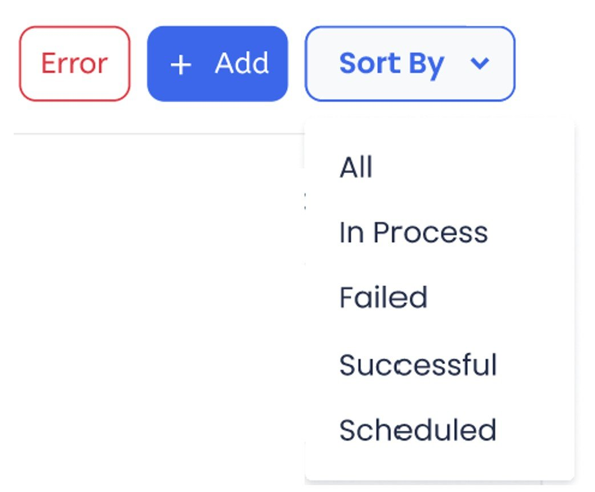
A dedicated filtering panel lets users sort by status.
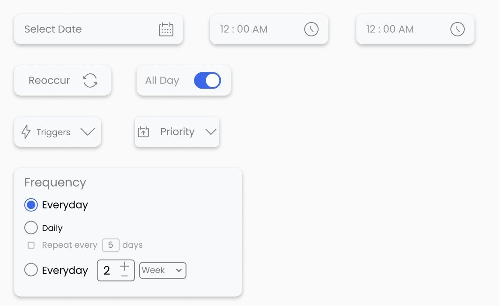
Allow builders to select trigger conditions, priority, and frequency.
TESTING
Six participants took part in task-based usability testing using a think-aloud protocol. Each session combined a background questionnaire, hands-on tasks with the prototype, a System Usability Scale (SUS) survey, and a short semi-structured interview.
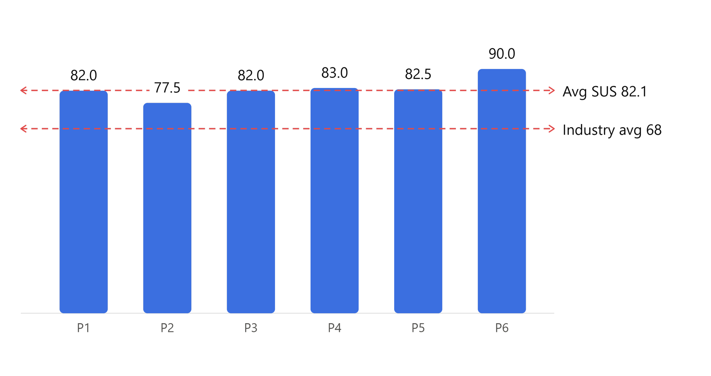
Average SUS score: 82.1 (range 77.5–90.0) in the "excellent usability" range.
Time zone view
Described as clarifying and time-saving for managing international schedules.
Form-based task creation
Felt structured and easy to pick up without guidance.
ITERATION
Every usability finding was logged against the SUS result and translated into a specific, testable change.
Four pain points drove the most impactful revisions:
CONFUSING TIME
AM/PM + zone labels
Testers misread 24-hour times across regions, so the calendar now shows AM/PM with an explicit time-zone label on every event.
WEAK EMPHASIS
Hierarchy for critical states
Important statuses were easy to miss, so type sizes increased, and critical states gained highlight blocks to pull the eye.
MISLEADING COLOUR
Onboarding colour legend
Status colours carried no shared meaning, so a legend was added to onboarding and the status bar to anchor interpretation.
HARD TO FIND
Search + Smart filters
With many tasks, locating one was slow, so a global search bar, multi-criteria tag filters, optional reminders and task edit/delete were introduced.
FINAL DESIGN
The final design brought clarity, flexibility, and efficiency to a previously fragmented scheduling experience.
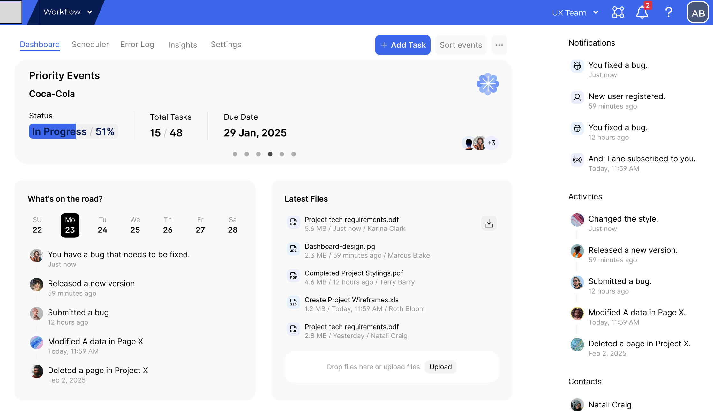
The dashboard consolidates priority events, task status, and error logs into a single overview, giving both Admins and Builders a clear entry point into their day.
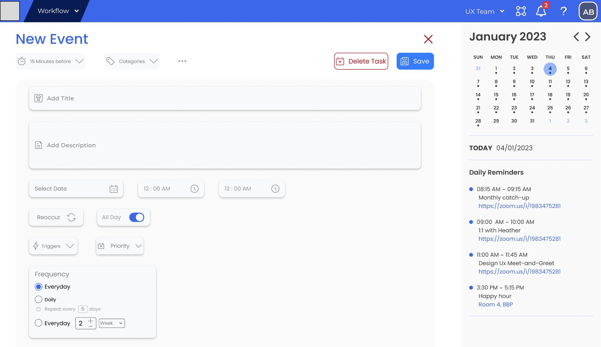
Task creation was built around a structured form, letting users set task type, priority, frequency, and trigger conditions without needing to understand the underlying scheduling logic.
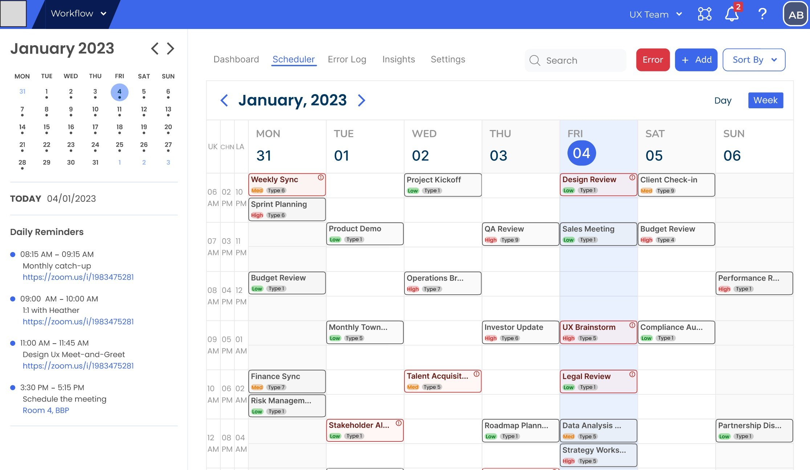
Error Monitoring : Highlight failed or missed tasks in a dedicated panel.
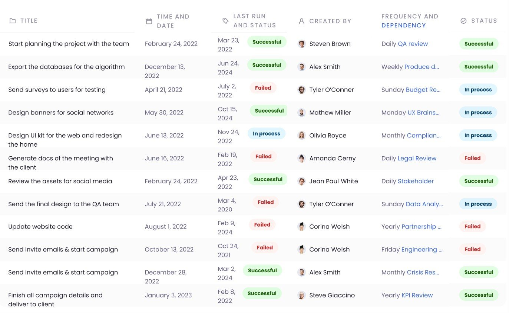
Selecting any task revealed a detail view with assignee, run history, duration, and dependencies, giving both Admins and Builders the context they needed to troubleshoot or edit.
REFLECTION
The Constraints of 2D Interfaces & The Reality of AI
When Schedulink handles hundreds of concurrent tasks within a narrow timeframe, the interface inevitably becomes severely cluttered. Within the limits of current 2D technology, designing a multi-task, multi-user environment that remains intuitive and maintains a low learning curve is a massive challenge.
Looking forward, we could either leverage AI assistance or dive deeper into user research to optimise these pain points. However, we must confront the reality that current AI cannot read users' minds and still suffers from a high error rate. Since a perfect solution does not yet exist, refining this system cannot be a one-time fix; it must be an ongoing process of gradual adaptation as technology evolves.
IF I TOOK IT FURTHER
Expand Filtering Capabilities (Currently restricted to task status)
Different departments focus on entirely distinct core business priorities and operational workflows. In future iterations, role- and department-based filtering will be introduced to provide information views tailored precisely to each role's operational needs.
Deepen Compliance with WCAG Standards
Due to time constraints, this initial phase prioritised the core interaction workflows for high-density task management and multi-role collaboration. Regarding accessibility, we have currently only implemented the baseline principle of avoiding colour as the sole means of conveying information. Future roadmaps can incorporate features such as Reflow and optimised Touch Targets to comply with more rigorous international accessibility standards.
NEXT PROJECT